Swiss poster skill — 12 same-content before/after pairs
Wide variety of prompts; each pair preserves the same title, subtitle, metadata, CTA, and supporting items. Only the design treatment changes.
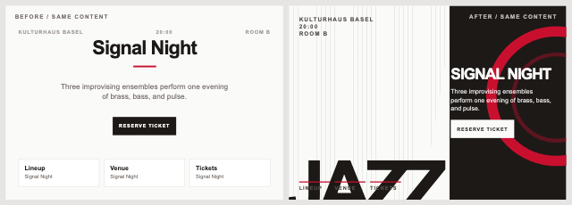
01-jazz-nightEvent poster for an experimental jazz night at a Basel arts venue.
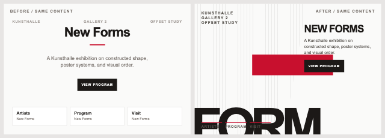
02-museum-formsMuseum landing page for a constructive-geometry exhibition.
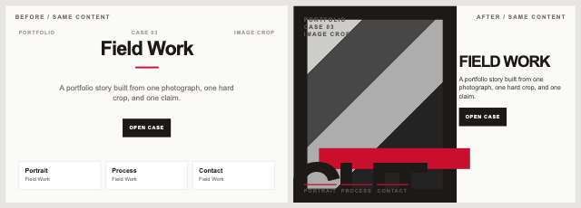
03-editorial-photoEditorial feature page driven by a single documentary photograph.
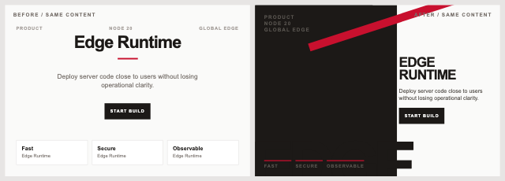
04-api-runtimeDeveloper-product hero for an edge runtime launch.
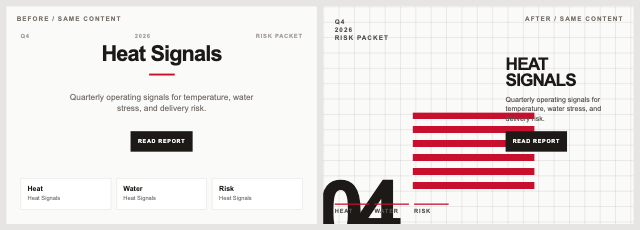
05-climate-reportClimate-risk report introduction that should feel analytical, not decorative.
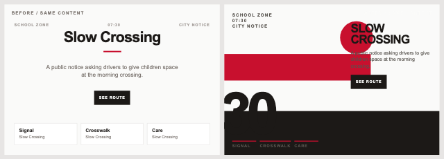
06-bike-safetyCivic safety campaign for protected crossings near schools.
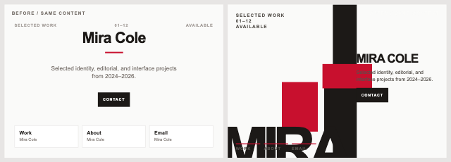
07-portfolio-studioIndependent designer portfolio landing page.
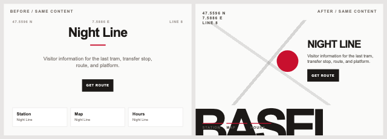
08-night-tramTransit information hero for a late-night tram route and station changes.
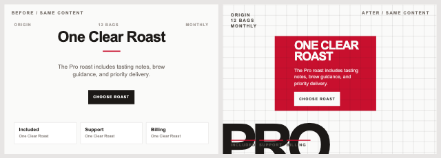
09-coffee-productObject-poster style launch panel for a single-origin coffee subscription.
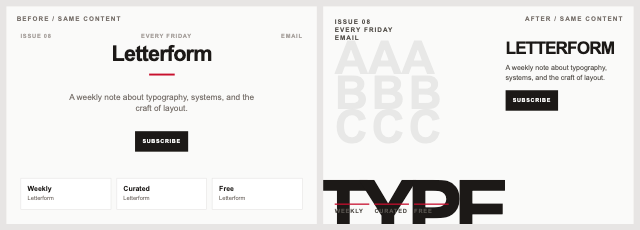
10-type-newsletterNewsletter signup for weekly typography criticism.
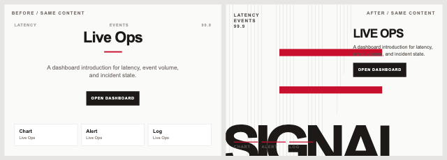
11-ops-dashboardSRE dashboard introduction for latency and incident state.
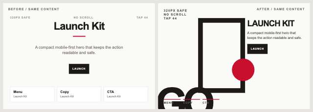
12-mobile-bankMobile banking onboarding screen that must stay thumb-safe and readable.
{kind=link}
{kind=link}
{kind=link}
{kind=link}
{kind=link}
{kind=link}
{kind=link}
{kind=link}
{kind=link}
{kind=link}
{kind=link}
{kind=link}